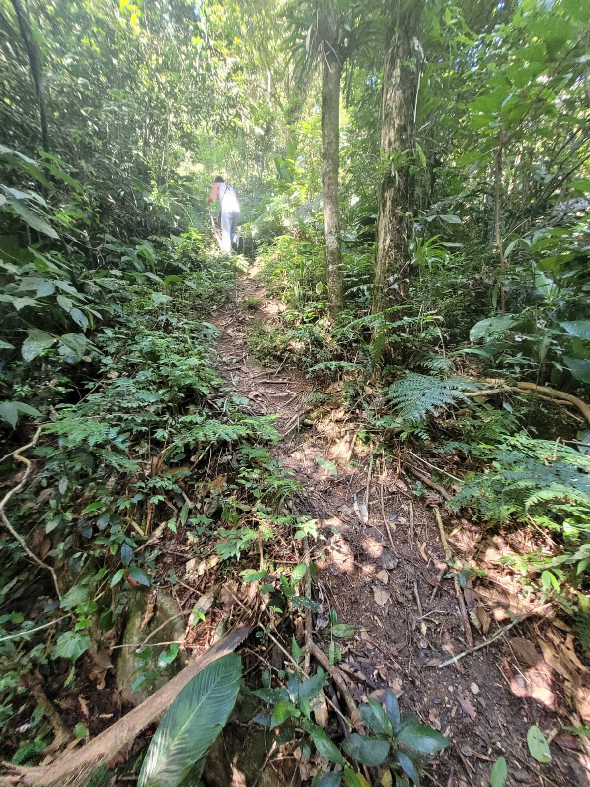
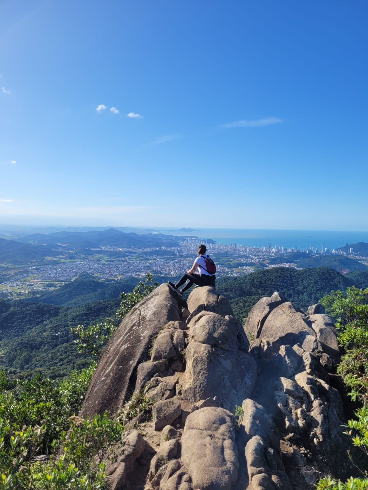
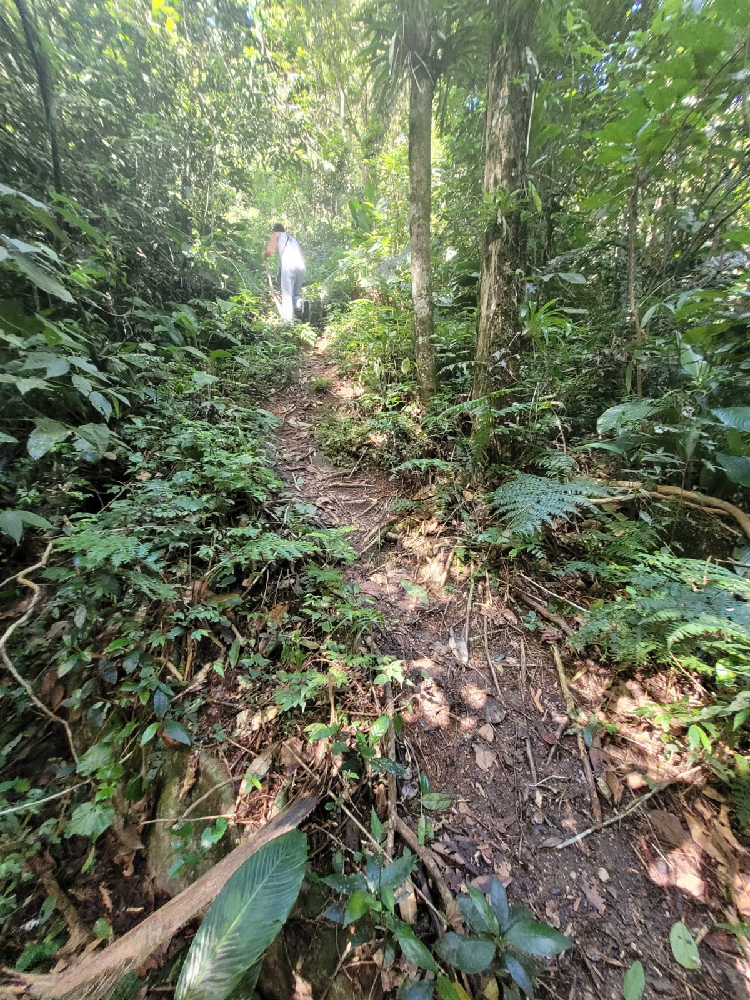
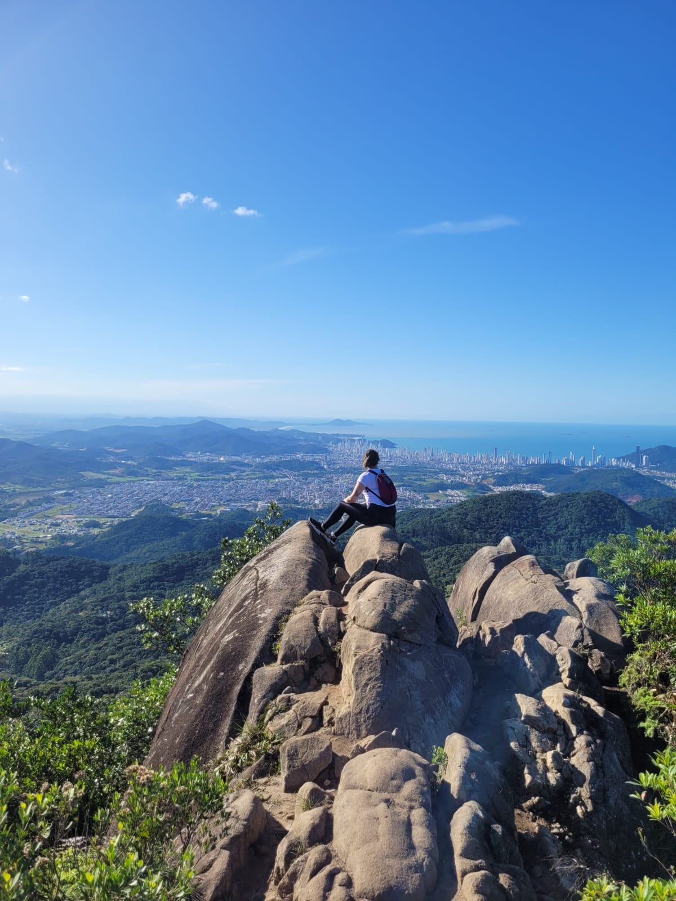

Caminhos da Aventura
 




Sobre nóis
Somos um casal apaixonado por trilhas e pela natureza. Sempre que temos um tempo livre,
exploravamos novos caminhos, desvendando segredos escondidos na mata e admirando paisagens deslumbrantes.
Inspirados por esta paixão, decidiramos criar o "Caminhos da Aventura".
Nele, compartilhavamos relatos de nosas experiências, dicas sobre trilhas,
fotos impressionantes e guias para ajudar outros amantes da natureza a explorar o mundo ao ar livre.
Gostariamos que nossa historia inspirem muitos a se aventurarem na natureza,
fortalecendo os laços entre as pessoas e o mundo natural.
E assim transforme nossa paixão em um legado, conectando pessoas com a beleza da natureza e os prazeres das trilhas,
compartilhando as alegrias da aventura com o mundo.
Então bora trilhar!!!